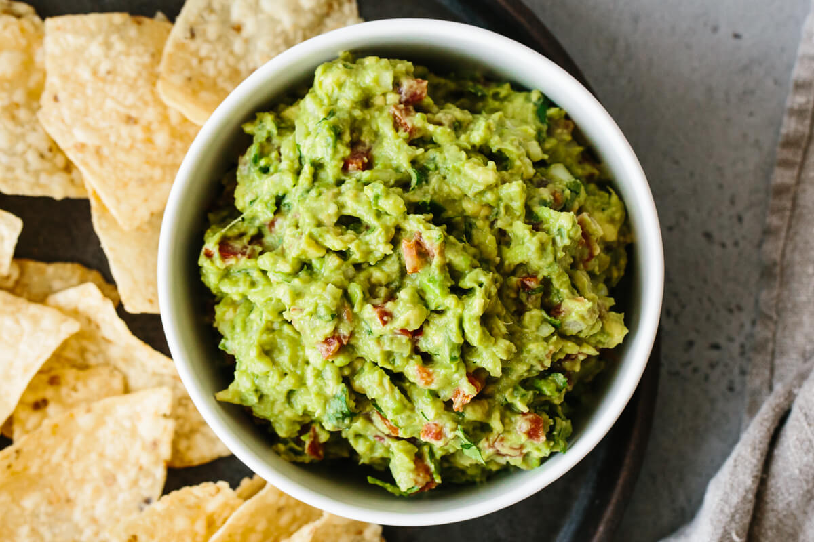

A cookbook or cookery book is a kitchen reference containing recipes.
Cookbooks may be general, or may specialize in a particular cuisine or category of food.
Recipes in cookbooks are organized in various ways: by course (appetizer, first course, main
course, dessert), by main ingredient, by cooking technique, alphabetically, by region or country,
and so on. They may include illustrations of finished dishes and preparation steps; discussions of
cooking techniques, advice on kitchen equipment, ingredients, and substitutions; historical and
cultural notes; and so on.
Quick and easy sugar cookies! They are really good, plain or with candies in
them.
My friend uses chocolate mints on top, and they're great!

Ingredients:
You can make this avocado salad smooth or chunky depending on your tastes.
Ingredients: